Abstract
The eigendecomposition of the Laplace–Beltrami Operator (LBO) is fundamental to geometric analysis, yet computing its low-frequency eigenmodes remains a significant bottleneck due to the high cost of iterative solvers on large-scale data. To amortize this cost, we introduce the Neural Eigenspace Operator (NEO), a feed-forward framework designed to predict the spectrum directly from point clouds. Crucially, NEO circumvents the ill-posed nature of standard eigenvector regression—which suffers from intrinsic sign flips and rotation ambiguities—by learning the stable, invariant low-frequency subspace instead. Specifically, the network predicts a redundant set of basis functions whose span robustly covers the target eigenspace, allowing for the recovery of accurate eigenpairs via a lightweight Rayleigh–Ritz refinement. To handle irregular sampling, we propose a mass-aware neural operator that incorporates per-point area weights into attention-based aggregation, improving robustness to non-uniform densities and enabling zero-shot generalization across resolutions. Our approach achieves near-linear runtime scaling and substantial wall-clock speedups over iterative solvers at comparable accuracy, and exhibits strong zero-shot transfer to high-resolution samplings. The resulting eigenpairs support standard spectral geometry tasks, while the raw basis functions provide effective point-wise features for downstream learning.
Method Overview
NEO takes a point cloud $X$ with per-point mass weights $w$ as input. A mass-aware neural operator predicts redundant basis functions $F \in \mathbb{R}^{N \times m}$ in a single forward pass. These are $M$-orthonormalized to obtain a subspace basis $Y$, then the discrete Laplacian is projected into this low-dimensional subspace. A small dense eigenproblem yields the final LBO eigenfunctions via Rayleigh–Ritz refinement.
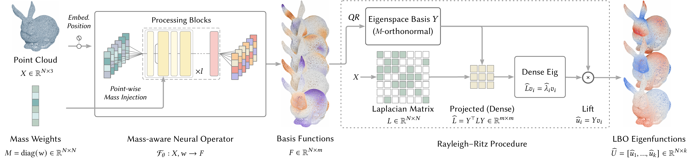
The NEO Inference Pipeline. From raw point cloud to LBO eigenfunctions: one forward pass through a mass-aware neural operator, followed by $M$-orthonormalization and a lightweight Rayleigh–Ritz dense eigensolve.
Key Contributions
1. Subspace Learning with Span Loss
Individual LBO eigenvectors are not uniquely defined: each mode admits a global sign flip, and repeated (or nearly repeated) eigenvalues allow arbitrary rotations within the eigenspace. These ambiguities make direct eigenvector regression ill-posed.
NEO instead learns the invariant subspace spanned by the eigenvectors, which is mathematically unique and stable. Rather than outputting exactly $k$ modes, NEO predicts a modestly redundant set of $m$ functions ($m > k$) whose span robustly captures the target eigenspace, providing slack to accommodate repeated or nearby eigenvalues.
To train this, we propose a span loss that measures how well the predicted subspace covers the ground-truth eigenspace:
$\mathcal{L}_{\text{span}} = 1 - \frac{1}{k}\|Y^\top M U_k\|_F^2$
This loss is invariant under any orthogonal change of basis $U_k \mapsto U_k R$ for $R \in O(k)$, which includes sign flips and rotations within (near-)degenerate eigenspaces. The condition $\mathcal{L}_{\text{span}} = 0$ implies that every ground-truth mode is perfectly contained within the predicted span, i.e., $\mathrm{span}(U_k) \subseteq \mathrm{span}(Y)$.
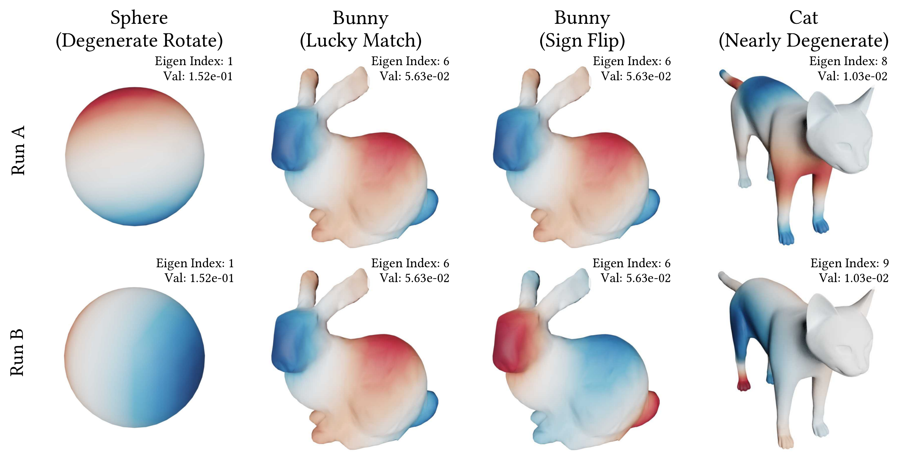
Ambiguities in LBO eigenvectors. (Left) Rotations within a degenerate eigenspace. (Middle) Sign flips. (Right) Mode mixing near spectral clusters. These ambiguities make direct eigenvector regression ill-posed, motivating our subspace-level learning with span loss.
2. Mass-Aware Neural Operator
Standard attention-based aggregation implicitly assumes uniform sampling, which biases the operator toward densely sampled regions and hurts cross-resolution generalization. We propose injecting per-point mass weights $w$ directly into the cross-attention logits, transforming the aggregation into a consistent quadrature rule:
$\alpha'_{ij} = \mathrm{softmax}\!\left(\frac{q_i k_j^\top}{\sqrt{d_h}} + \log w_j\right)$
Since $\exp(s + \log w_j) = \exp(s) \cdot w_j$, the mass term emerges as a multiplicative quadrature weight outside the exponential kernel, making the aggregation consistent with area-weighted integration on non-uniform point clouds. This modification is invariant to the global scale of $w$ and exactly recovers standard attention when the mass weights are constant.
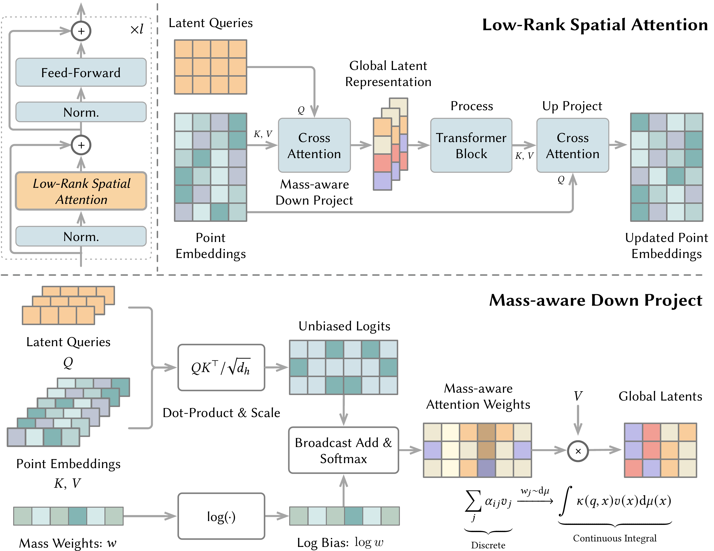
Neural Operator with Mass Injection. (Top) The latent-bottleneck design efficiently processes high-resolution geometry via global tokens. (Bottom) The down-projection incorporates point masses via a logarithmic bias in the cross-attention, approximating a continuous measure-weighted integral.
Results
Accuracy
NEO achieves low span loss across all target modes. The Rayleigh–Ritz refinement recovers eigenvectors and eigenvalues with low error. The method is numerically stable even under half-precision (FP16) inference.
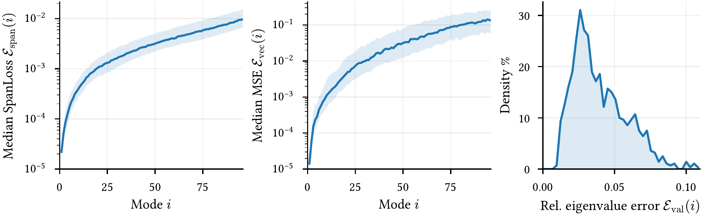
Accuracy distribution on the ShapeNet test set. (Left/Middle) Per-mode Span Loss and Eigenvector MSE. Solid lines: median; shaded bands: IQR. (Right) Density of mean relative eigenvalue error.
Runtime Scaling
NEO scales near-linearly with the number of points, delivering substantial wall-clock speedups over ARPACK (the standard iterative eigensolver). The method is trained exclusively on 2K-point clouds but generalizes zero-shot to over one million points.
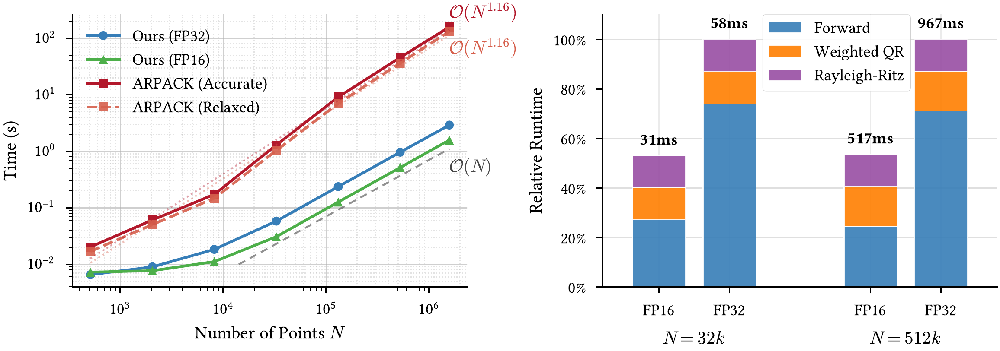
Runtime scaling. NEO (GPU) vs. ARPACK (CPU) for $k{=}96$ eigenpairs, from 512 to 1.6M points.
Robustness to Non-Uniform Sampling
We visualize recovered eigenvectors under varying sampling density biases. While the mass-agnostic baseline fails under biased sampling, our mass-aware approach consistently matches the ground truth. This confirms that injecting mass measures effectively decouples the learned features from sampling density.
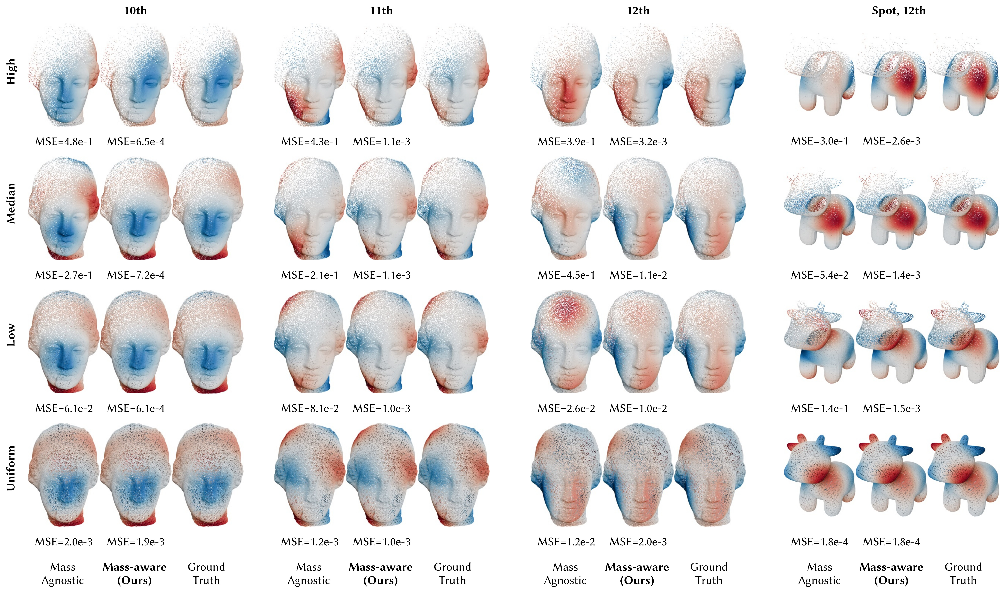
Robustness to non-uniform sampling. Recovered eigenvectors (10th–12th modes) under varying sampling density biases, from highly non-uniform (top) to uniform (bottom). The mass-agnostic baseline (left) fails under biased sampling; our mass-aware NEO (right) consistently matches ground truth.
Cross-Resolution & Discretization Transfer
Despite being trained only on coarse 2K point clouds, NEO demonstrates strong zero-shot generalization across resolutions (2K to 1.6M) and distinct Laplacian discretizations (intrinsic Delaunay vs. $k$-NN graph). While ARPACK's cost grows super-linearly, NEO achieves over $100\times$ speedup at 1.6M points.
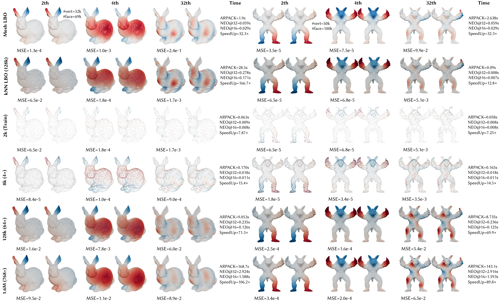
Resolution scaling and discretization transfer. NEO's predicted eigenfunctions (modes 2, 4, 32) compared against ground truth across varying resolutions and Laplacian discretizations (Mesh vs. $k$-NN). Runtime columns highlight the efficiency gain.
Gallery
Visualization of NEO predictions on our out-of-distribution test dataset, encompassing a wide spectrum of semantic categories, topologies, and structural variations.
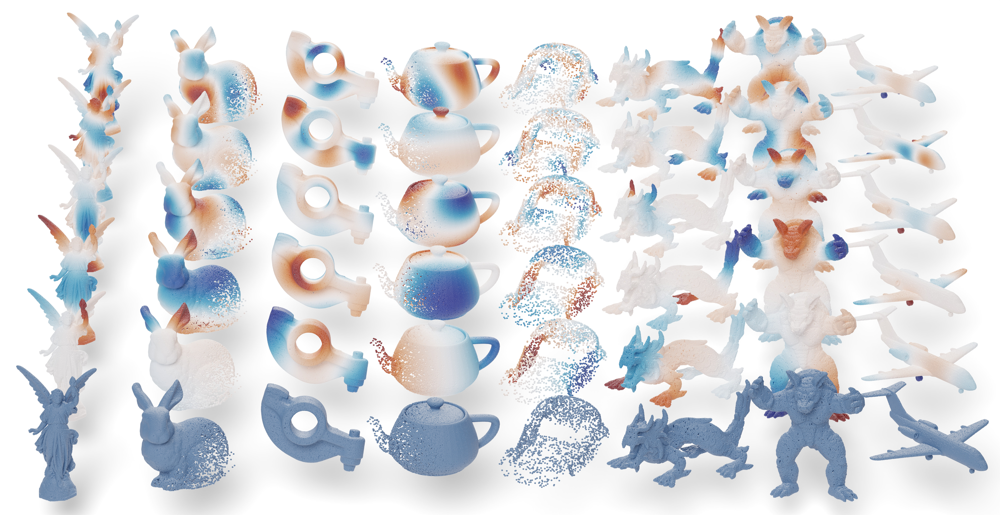
Downstream Applications
The eigenpairs recovered by NEO can be directly plugged into standard spectral geometry pipelines. The raw predicted basis functions also serve as effective point-wise features for downstream learning tasks.
Segmentation (NEO + PointNet)
By providing geometry-aware spectral context, NEO+PointNet successfully distinguishes topologically distinct parts that are spatially adjacent—such as separating hands resting on thighs—where coordinate-based methods often fail due to Euclidean proximity.
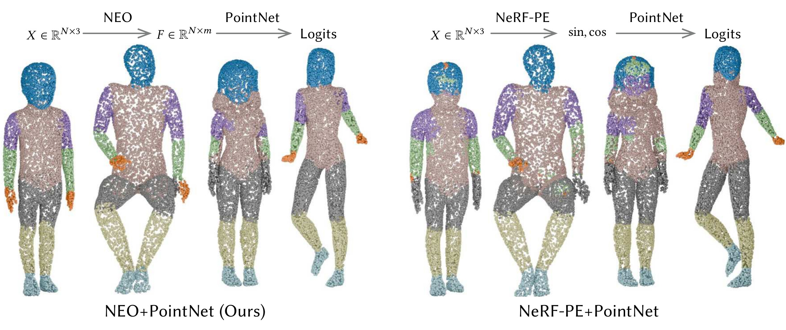
Segmentation via NEO. Comparison of segmentation results using our predicted basis ($F$) versus sinusoidal positional encoding (NeRF-PE).
Shape Matching via Functional Maps
NEO-predicted eigenpairs enable accurate functional map computation for non-rigid shape correspondence. While NEO yields a slightly higher geodesic error numerically, the visual correspondence remains semantically consistent and smooth.
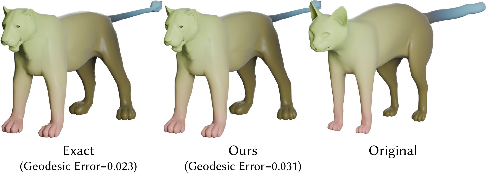
Functional map correspondence. Transfer results between a cat and a lion using HKS descriptors derived from exact vs. NEO eigenpairs.
Heat-Based Geodesic Distance
NEO provides a warm start for Poisson-based solvers: by projecting the right-hand side onto the predicted spectral subspace, the initial guess already captures most of the low-frequency solution energy, leading to faster iterative convergence.
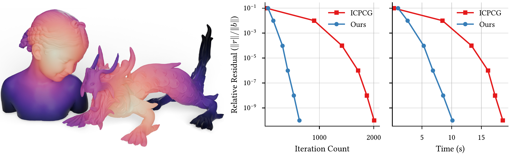
Fast Poisson solve. Heat-based geodesic computation with convergence analysis. NEO's warm start accelerates convergence over standard ICPCG.
Limitations
We identify two main limitations: (1) Frequency degradation: accuracy drops for higher modes where the spectral gap narrows and oscillations become harder to approximate. (2) Unseen fine details: the model struggles with thin structures or complex topological details that differ significantly from the coarse geometry seen during training.
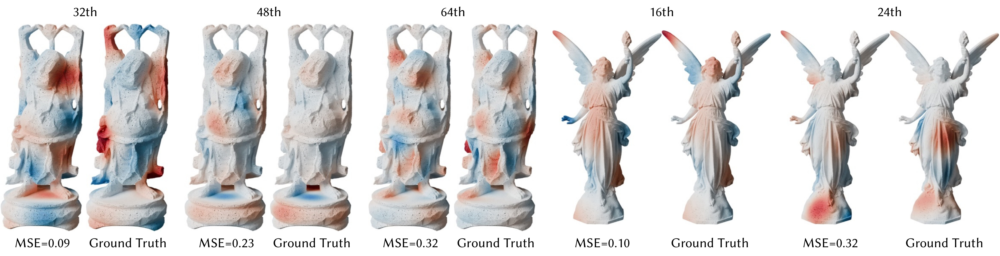
Failure cases. (Left) Higher-mode degradation with narrowing spectral gaps. (Right) Difficulty with thin structures and unseen topological details.
BibTeX
@article{yang2026neo,
title={Learning Laplacian Eigenspace with Mass-Aware Neural Operators on Point Clouds},
author={Yang, Zherui and Du, Tao and Liu, Ligang},
journal={ACM Transactions on Graphics (Proc. SIGGRAPH)},
year={2026}
}